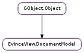

| static | new() |
| static | new_with_document(document) |
| get_continuous() | |
| get_document() | |
| get_dual_page() | |
| get_dual_page_odd_pages_left() | |
| get_fullscreen() | |
| get_inverted_colors() | |
| get_max_scale() | |
| get_min_scale() | |
| get_page() | |
| get_page_layout() | |
| get_rotation() | |
| get_scale() | |
| get_sizing_mode() | |
| set_continuous(continuous) | |
| set_document(document) | |
| set_dual_page(dual_page) | |
| set_dual_page_odd_pages_left(odd_left) | |
| set_fullscreen(fullscreen) | |
| set_inverted_colors(inverted_colors) | |
| set_max_scale(max_scale) | |
| set_min_scale(min_scale) | |
| set_page(page) | |
| set_page_by_label(page_label) | |
| set_page_layout(layout) | |
| set_rotation(rotation) | |
| set_scale(scale) | |
| set_sizing_mode(mode) |
| Name | Type | Flags | Description |
|---|---|---|---|
| continuous | bool | r/w | Whether document is displayed in continuous mode |
| document | EvinceDocument.Document | r/w | The current document |
| dual-odd-left | bool | r/w | Whether odd pages are displayed on left side in dual mode |
| dual-page | bool | r/w | Whether document is displayed in dual page mode |
| fullscreen | bool | r/w | Whether document is displayed in fullscreen mode |
| inverted-colors | bool | r/w | Whether document is displayed with inverted colors |
| max-scale | float | r/w | Maximum scale factor |
| min-scale | float | r/w | Minium scale factor |
| page | int | r/w | Current page |
| page-layout | EvinceView.PageLayout | r/w | Current page layout |
| rotation | int | r/w | Current rotation angle |
| scale | float | r/w | Current scale factor |
| sizing-mode | EvinceView.SizingMode | r/w | Current sizing mode |
| Name | Parameters | Return | Description |
|---|---|---|---|
| page-changed | int, int |
Bases: GObject.Object
| Return type: | EvinceView.DocumentModel |
|---|
| Parameters: | document (EvinceDocument.Document) – |
|---|---|
| Return type: | EvinceView.DocumentModel |
| Returns: | a EvinceDocument.Document |
|---|---|
| Return type: | EvinceDocument.Document |
Returns the EvinceDocument.Document referenced by the model.
| Returns: | whether the document model’s page layout is set to EvinceView.PageLayout.DUAL. |
|---|---|
| Return type: | bool |
| Return type: | float |
|---|
| Return type: | float |
|---|
| Returns: | the document model’s page layout |
|---|---|
| Return type: | EvinceView.PageLayout |
| Return type: | float |
|---|
| Return type: | EvinceView.SizingMode |
|---|
| Parameters: | document (EvinceDocument.Document) – |
|---|
| Parameters: | dual_page (bool) – whether to enable dual page mode |
|---|
Sets the document model’s page layout to EvinceView.PageLayout.SINGLE or EvinceView.PageLayout.DUAL.
| Parameters: | max_scale (float) – |
|---|
| Parameters: | min_scale (float) – |
|---|
| Parameters: | layout (EvinceView.PageLayout) – a EvinceView.PageLayout |
|---|
Sets the document model’s page layout to layout.
| Parameters: | scale (float) – |
|---|
| Parameters: | mode (EvinceView.SizingMode) – |
|---|